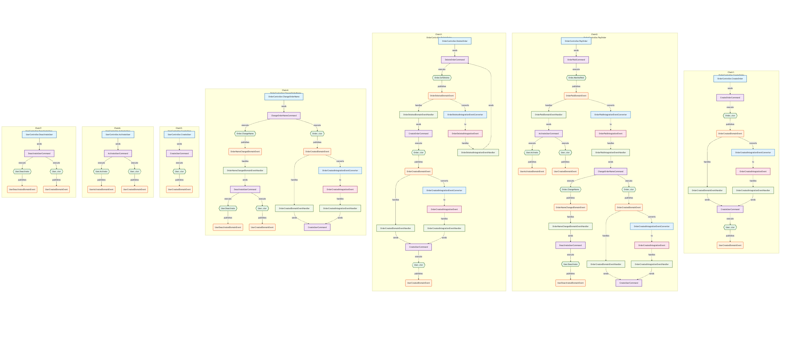
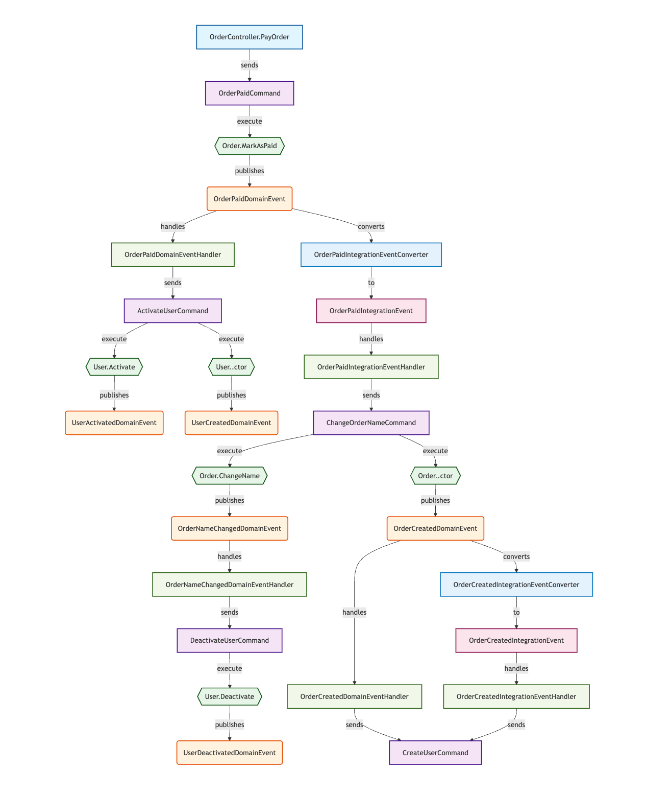

Code Flow Analysis¶
Overview¶
NetCorePal.Extensions.CodeAnalysis provides powerful code flow analysis capabilities through the CodeFlowAnalysisSourceGenerator source generator, which automatically analyzes your code structure to help you understand the relationships and data flow between components in DDD architecture.
Features¶
🔍 Automatic Code Analysis¶
- Command Sender Detection: Automatically identifies controllers, endpoints, event handlers, and other types that send commands
- Aggregate Root Recognition: Detects aggregate roots that implement the
IAggregateRootinterface - Command Recognition: Identifies command types that implement the
ICommandinterface - Event Detection: Automatically discovers domain events and integration events
- Handler Analysis: Identifies various event handlers and converters
🔄 Relationship Mapping¶
The source generator automatically establishes the following relationships:
- Method to Command: Relationships between methods that send commands and their corresponding commands
- Command to Aggregate Method: Relationships between command handlers and aggregate methods they invoke
- Method to Domain Event: Relationships between aggregate methods and domain events they emit
- Domain Event to Integration Event: Conversion relationships through converters
- Domain Event to Handler: Relationships between domain events and their handlers
- Integration Event to Handler: Relationships between integration events and their handlers
Usage¶
1. Install Packages¶
Add the following package reference to all projects that need to be analyzed:
<PackageReference Include="NetCorePal.Extensions.CodeAnalysis" />
Note: The
NetCorePal.Extensions.CodeAnalysispackage already includes the source generator, so there's no need to install the source generator package separately. Make sure to add this package reference to all projects that need to be analyzed.
2. Enable Source Generator¶
The source generator runs automatically at compile time without additional configuration. After compilation, it generates the CodeFlowAnalysisResult.g.cs file.
3. Access Analysis Results¶
using System.Reflection;
using NetCorePal.Extensions.CodeAnalysis;
// Use AnalysisResultAggregator static class to get analysis results
// Need to pass assemblies containing the code to be analyzed
var assemblies = new[] { Assembly.GetExecutingAssembly() }; // Or other assemblies to be analyzed
var result = AnalysisResultAggregator.Aggregate(assemblies);
// Access various component information
var controllers = result.Controllers;
var commands = result.Commands;
var entities = result.Entities;
var domainEvents = result.DomainEvents;
var relationships = result.Relationships;
Note: The
Aggregatemethod requires one or more assemblies as parameters that contain the code to be analyzed. You can pass the current assembly, specific business assemblies, or multiple assemblies from your project.
Supported Code Patterns¶
Controllers and Endpoints¶
// ASP.NET Core Controller
[ApiController]
public class UserController : ControllerBase
{
public async Task<IActionResult> CreateUser([FromBody] CreateUserCommand command)
{
await _mediator.Send(command);
return Ok();
}
}
// FastEndpoints Endpoint
public class CreateUserEndpoint : Endpoint<CreateUserCommand>
{
public override async Task HandleAsync(CreateUserCommand command, CancellationToken ct)
{
await SendAsync(command, ct);
}
}
Commands and Handlers¶
// Command
public record CreateUserCommand(string Name, string Email) : ICommand;
// Command Handler
public class CreateUserCommandHandler : IRequestHandler<CreateUserCommand>
{
public async Task<Unit> Handle(CreateUserCommand request, CancellationToken cancellationToken)
{
var user = new User(request.Name, request.Email);
// Business logic...
return Unit.Value;
}
}
Aggregate Roots and Domain Events¶
// Aggregate Root
public class User : IAggregateRoot
{
public User(string name, string email)
{
Name = name;
Email = email;
AddDomainEvent(new UserCreatedDomainEvent(Id, name, email));
}
public void UpdateProfile(string name, string email)
{
Name = name;
Email = email;
AddDomainEvent(new UserUpdatedDomainEvent(Id, name, email));
}
}
// Domain Event
public record UserCreatedDomainEvent(Guid UserId, string Name, string Email) : IDomainEvent;
Event Handlers and Converters¶
// Domain Event Handler
public class UserCreatedDomainEventHandler : IDomainEventHandler<UserCreatedDomainEvent>
{
public async Task HandleAsync(UserCreatedDomainEvent domainEvent, CancellationToken cancellationToken)
{
// Handle domain event
await _mediator.Send(new SendWelcomeEmailCommand(domainEvent.UserId));
}
}
// Integration Event Converter
public class UserCreatedIntegrationEventConverter : IIntegrationEventConverter<UserCreatedDomainEvent, UserCreatedIntegrationEvent>
{
public UserCreatedIntegrationEvent Convert(UserCreatedDomainEvent domainEvent)
{
return new UserCreatedIntegrationEvent(domainEvent.UserId, domainEvent.Name, domainEvent.Email);
}
}
// Integration Event Handler
public class UserCreatedIntegrationEventHandler : IIntegrationEventHandler<UserCreatedIntegrationEvent>
{
public async Task Subscribe(UserCreatedIntegrationEvent integrationEvent, CancellationToken cancellationToken)
{
// Handle integration event
await _mediator.Send(new SyncUserToExternalSystemCommand(integrationEvent.UserId));
}
}
Generated Analysis Results¶
Data Structure¶
public class CodeFlowAnalysisResult
{
public List<ControllerInfo> Controllers { get; set; } = new();
public List<CommandInfo> Commands { get; set; } = new();
public List<EntityInfo> Entities { get; set; } = new();
public List<DomainEventInfo> DomainEvents { get; set; } = new();
public List<IntegrationEventInfo> IntegrationEvents { get; set; } = new();
public List<DomainEventHandlerInfo> DomainEventHandlers { get; set; } = new();
public List<IntegrationEventHandlerInfo> IntegrationEventHandlers { get; set; } = new();
public List<IntegrationEventConverterInfo> IntegrationEventConverters { get; set; } = new();
public List<RelationshipInfo> Relationships { get; set; } = new();
}
Relationship Types¶
MethodToCommand: Relationships between methods and commandsCommandToAggregateMethod: Relationships between commands and aggregate methodsMethodToDomainEvent: Relationships between methods and domain eventsDomainEventToIntegrationEvent: Relationships between domain events and integration eventsDomainEventToHandler: Relationships between domain events and handlersIntegrationEventToHandler: Relationships between integration events and handlers
Visualization Chart Generation¶
The framework provides a powerful MermaidVisualizer static class that converts analysis results into various types of Mermaid diagrams to help you intuitively understand system architecture and data flow.
Supported Chart Types¶
1. Complete Architecture Flow Chart¶
Generate a complete architecture diagram containing all components and relationships:
// Get assemblies to be analyzed
var assemblies = new[] { Assembly.GetExecutingAssembly() }; // Or other assemblies to be analyzed
var analysisResult = AnalysisResultAggregator.Aggregate(assemblies);
// Generate complete architecture flow chart
var architectureChart = MermaidVisualizer.GenerateArchitectureFlowChart(analysisResult);
2. Command Flow Chart¶
Flow chart focused on command execution processes:
// Generate command flow chart
var commandChart = MermaidVisualizer.GenerateCommandFlowChart(analysisResult);
3. Event Flow Chart¶
Flow chart focused on event-driven processes:
// Generate event flow chart
var eventChart = MermaidVisualizer.GenerateEventFlowChart(analysisResult);
4. Class Diagram¶
Class diagram showing relationships between types:
// Generate class diagram
var classDiagram = MermaidVisualizer.GenerateClassDiagram(analysisResult);
5. Command Chain Flow Charts¶
Detailed execution chain diagrams centered on commands:
// Generate command chain flow charts collection
var commandChains = MermaidVisualizer.GenerateCommandChainFlowCharts(analysisResult);
foreach (var (chainName, diagram) in commandChains)
{
Console.WriteLine($"Chain: {chainName}");
Console.WriteLine(diagram);
}
6. Multi-Chain Comprehensive Chart¶
Show multiple command execution chains in a single diagram:
// Generate multi-chain comprehensive chart
var multiChainChart = MermaidVisualizer.GenerateMultiChainFlowChart(analysisResult);
Demo:

7. Independent Chain Chart Collection¶
Generate independent charts for each chain:
// Generate all independent chain charts
var allChainCharts = MermaidVisualizer.GenerateAllChainFlowCharts(analysisResult);
Demo:

Chart Features¶
- Automatic Node Classification: Different types of nodes use different shapes and colors
- Controllers: Rectangle, blue
- Commands: Rectangle, purple
- Aggregate Roots: Diamond, green
- Domain Events: Circle, orange
- Integration Events: Rectangle, pink
- Event Handlers: Rectangle, light green
-
Converters: Trapezoid, blue
-
Smart Relationship Annotation: Different types of relationships use different arrows and labels
- Solid arrows: Direct call relationships
- Dashed arrows: Event handling relationships
-
Thick solid arrows: Important business processes
-
Chain Tracking: Ability to completely track the full chain from user requests to business execution
Interactive HTML Visualization¶
The framework provides the GenerateVisualizationHtml method to generate a complete interactive HTML visualization page with built-in chart preview and navigation features.
HTML Visualization Features¶
- Interactive Navigation: Left sidebar with tree navigation for different chart types
- Real-time Rendering: Built-in Mermaid.js for immediate chart visualization
- Responsive Design: Adapts to different screen sizes and devices
- Professional Styling: Clean, modern interface with dark sidebar and light content area
- Multi-language Support: Supports both Chinese and English interfaces
- One-Click Online Editing: Built-in "View in Mermaid Live" button for one-click jump to Mermaid Live Editor for online editing and sharing
Generate HTML Visualization¶
using System.Reflection;
using NetCorePal.Extensions.CodeAnalysis;
public class HtmlVisualizationGenerator
{
public void GenerateVisualizationPage()
{
// Get assemblies to be analyzed
var assemblies = new[] { Assembly.GetExecutingAssembly() };
var analysisResult = AnalysisResultAggregator.Aggregate(assemblies);
// Generate complete interactive HTML page
var htmlContent = MermaidVisualizer.GenerateVisualizationHtml(analysisResult);
// Save to file
File.WriteAllText("visualization.html", htmlContent);
// Open in browser
Process.Start(new ProcessStartInfo("visualization.html") { UseShellExecute = true });
}
}
HTML Page Structure¶
The generated HTML page includes:
- Sidebar Navigation:
- Overall Architecture section (Complete architecture flowchart, Class diagram)
- Specialized Flows section (Command flowchart, Event flowchart)
- Command Chains section (Individual command execution chains)
- Multi-Chain Flowchart (Comprehensive view of all chains)
-
Individual Chain Flowcharts (Separate diagrams for each chain)
-
Main Content Area:
- Dynamic chart title and description
- Interactive Mermaid diagram rendering
- "View in Mermaid Live" Button: Each chart has this button in the upper right corner for one-click jump to Mermaid Live Editor
-
Responsive layout with loading states and error handling
-
Interactive Features:
- Click navigation items to switch between different charts
- Active state highlighting for current selection
- Expandable/collapsible chain sections
- Counter badges showing number of chains
Demo HTML Template¶
You can view a sample HTML visualization at: MermaidDiagram.html
Alternatively, you can download the HTML file and open it directly in your browser for the full interactive experience.
Customization Options¶
The generated HTML includes:
- Modern CSS Styling: Clean, professional appearance with hover effects
- Mermaid Configuration: Optimized theme and layout settings
- Error Handling: Graceful handling of rendering errors
- Loading States: User-friendly loading indicators
// Example of customizing the visualization
var analysisResult = AnalysisResultAggregator.Aggregate(assemblies);
var htmlContent = MermaidVisualizer.GenerateVisualizationHtml(analysisResult);
// The generated HTML includes all chart types and interactive features
// No additional configuration needed - just save and open in browser
File.WriteAllText("my-architecture-visualization.html", htmlContent);
Browser Compatibility¶
The generated HTML works with all modern browsers:
- Chrome/Edge 88+
- Firefox 85+
- Safari 14+
- Mobile browsers with JavaScript support
Online Chart Preview Feature¶
You can also preview and edit individual charts online using Mermaid Live Editor:
- Access Mermaid Live Editor: Open https://mermaid.live/edit
- Paste Chart Code: Paste the generated Mermaid code into the editor
- Real-time Preview: The right side will show the rendered chart in real-time
- Export Images: Export charts as PNG, SVG, and other formats
- Share Links: Generate share links for team collaboration
Usage Steps:
// 1. Generate Mermaid chart code
var analysisResult = AnalysisResultAggregator.Aggregate(assemblies);
var mermaidCode = MermaidVisualizer.GenerateArchitectureFlowChart(analysisResult);
// 2. Print or save to file
Console.WriteLine(mermaidCode);
File.WriteAllText("architecture.mmd", mermaidCode);
// 3. Copy code to https://mermaid.live/edit for preview
Tip: The demo images shown above were generated using Mermaid Live Editor. You can paste any Mermaid code generated by the framework into this tool for visual preview.
One-Click Online Editing Feature¶
To further enhance user experience, the generated HTML visualization page includes a built-in "View in Mermaid Live" button that allows you to jump to Mermaid Live Editor with one click without manual copy-paste.
Button Features¶
- Smart Compression: Automatically uses pako compression algorithm to optimize URL length, supporting larger charts
- Automatic Fallback: If pako compression is unavailable, automatically falls back to base64 encoding
- Instant Jump: Click the button to immediately open Mermaid Live Editor in a new tab
- Complete Chart: Ensures the currently displayed chart is completely transferred to the online editor
- Error Handling: Gracefully handles network errors and browser compatibility issues
How to Use¶
- Generate HTML Visualization Page:
var analysisResult = AnalysisResultAggregator.Aggregate(assemblies);
var htmlContent = MermaidVisualizer.GenerateVisualizationHtml(analysisResult);
File.WriteAllText("visualization.html", htmlContent);
-
Open Page in Browser: Access the generated HTML file in your browser
-
Select Chart to Edit: Choose any chart type through the left navigation
-
Click "View in Mermaid Live" Button:
- Button is located in the upper right corner of the chart
- Only displays when chart content is available
- Automatically opens Mermaid Live Editor in a new tab after clicking
- Current chart content is automatically loaded into the editor
Supported Operations¶
In Mermaid Live Editor, you can:
- Real-time Editing: Modify chart definitions with real-time preview
- Export Images: Save as PNG, SVG, PDF, and other formats
- Generate Links: Create sharing links for team collaboration
- Copy Code: Copy modified Mermaid code
- Switch Themes: Choose different visual themes
Technical Implementation¶
- URL Encoding Optimization: Prioritizes pako compression to reduce URL length
- Browser Compatibility: Supports all modern browsers
- Security Considerations: Data transfer through URL parameters, no additional permissions required
- User Experience: Button styling consistent with the overall interface
Note: This feature requires network connection to access Mermaid Live Editor. Chart data is transferred through URL parameters without server storage.
ASP.NET Core Middleware Integration¶
The framework provides ASP.NET Core middleware integration that allows you to embed a code analysis chart viewer directly into your web application, offering a convenient online browsing experience.
Middleware Features¶
- Zero Configuration Setup: Enable the code analysis chart viewer in your app with just one line of code
- Real-time Analysis: Automatically analyzes current application assemblies without pre-generation
- Development Environment Only: Enabled only in development environment, automatically disabled in production
- Unified Entry Point: Access through web endpoints, integrated with your application
- Responsive Interface: Modern web interface with mobile device support
Quick Start¶
Step 1: Install Package¶
Ensure your ASP.NET Core project has the code analysis package installed:
<PackageReference Include="NetCorePal.Extensions.CodeAnalysis" />
Step 2: Register Visualization Endpoint¶
Add a code analysis visualization endpoint in Program.cs:
var builder = WebApplication.CreateBuilder(args);
// ...other service registrations...
var app = builder.Build();
// Register code analysis visualization endpoint only in development environment
if (app.Environment.IsDevelopment())
{
app.MapGet("/diagnostics/code-analysis", () =>
{
// Aggregate analysis results from current application domain
var analysisResult = AnalysisResultAggregator.Aggregate(AppDomain.CurrentDomain.GetAssemblies());
// Generate complete HTML visualization page
var htmlContent = MermaidVisualizer.GenerateVisualizationHtml(
analysisResult,
"Application Architecture Visualization");
return Results.Content(htmlContent, "text/html");
});
}
// ...other middleware configurations...
app.Run();
Step 3: Access the Analysis Visualization¶
After starting your application, visit the following URL:
https://localhost:5001/diagnostics/code-analysis
More Examples¶
For more usage examples, please refer to the project's test code and sample projects.